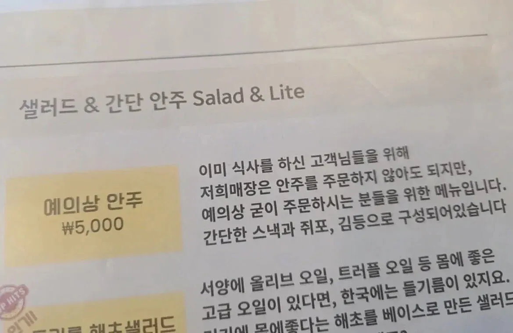

예의상 안주.JPG
댓글
2차 3차집이면 좋은데
굳이 먹지도 않는 싼 감튀 이런거 시키느니 저거 시키지 ㅋㅋ
가볍게 맥주 몇잔만 먹을거면 너무 반갑지
개이득 아님? 5천원에 저 정도면
저기 한번 가면 2차나 3차는 저집 무조건 생각 날 듯
아주 좋구먼
잘 남겨드시게
구성 잘나오면 단골됨 ㅋㅋㅋ
와바 생각나네. 기본안주가 4종류 스낵줘서 맥주 뒤지게 먹었던 기억이
괜찮은듯
아 배부른데? 그럼 거기가자 이런식으로 될 수 있다고봄ㅋㅋ
장사할줄아네
이거 무슨 느낌인줄 알겠다 ㅋㅋㅋ
뭔가 먹기는 싫은데 뭔가 앞에 있어서 술자리 분위기는 있었으면
괜찮은데?
제일 기본 안주네
불편충들 많아서 명칭은 바꾸는 게 나을 듯
ㅇㅇ 심플 마른 안주 뭐 그런식으로 작명하면 그거도 괜찮은듯
난 괜찮다고봄 2차 3차 갈때쯤이면 저런거 하나 시켜놓고 맥주 한잔 찌끄리면 좋지
3차 4차 집 확정 ㅋㅋㅋㅋ아이디어 좋네
근데 일본처럼 강제 되는거면 뚝깨야해
편한가게인듯
애초에 메뉴 설명에 안주주문 안해도 된다고 써있는데 이상한 걱정하는 애들 많네
반대로 얼마나 안주 안시키는 애들이 많으면..
한 잔 시켜놓고 몇시간씩 죽치는게 아닌 다음에야 술만 마시는게 이익은 제일 크긴 할걸? 안주 마진 제일 많이 남기는 메뉴해도 같은 가격 맥주 소주에서 나는 마진에는 안될거임
밥먹고 맥주집 2차 많이가지
똑똑하네 술이 많이 남으니 돈도되고 손님도 좋고
칵테일바 같은덴가? 술 마시다보면 간단한 안주 있으면 좋긴 하더라 ㅋㅋ
좋지 가게도 어차피 술파는거 좋아할거고
쫌 취해서
3차~4차 갈떄쯤
안주는 별로 안먹고 싶고 자리는 옮기고 싶고
그럴때 가면 딱 가면 좋을듯
좋은듯
마카로니 안나오는 술집이면 2차나 3차때 걍 간단하게 먹을 수 있고
빽스비어는 맥주를 시키면 마카로니가 나옵니다!!
좋은걸?
극호
괨탐ㅎ은데
직관적이라 서로 좋네
가격도 부담없고
3차는 가고싶고 배는부른데 술만또 먹기는 그렇고 치킨같은거 시키긴해도 손도못대는경우가많지
근데 저런집 오래 못가고 폐업하더라..
그 많던 노가리집 전멸
술을 많이 마셔야하는데 술도 안마시고 자리만 주구장창 ㅠ
난 안주먹으로 술자리 가는편이라 내가 시킬메뉴는 아닌듯 여기 타코와사비주세요
존나좋다
눈치안봐도되고
너무좋다 진짜
오히려 눈치 안보면서도 안주거리 신경써준 좋은 방안같은데.. 저게 안주없이 자리세5000원이면 흠 하겠지만
저희 바는 아예 안주안팔아요 편하게 놀러오세요..
근데 나 궁금한게 있는데 난 술을 안마시는 사람이라서
잘몰라서 구래
친구들 만나도 맥주 한잔이나 하이볼 한잔정도?
근데 꼭 술마시는 친구들 만나면 2차 3차를 가던데
막상 2차가면 안주 먹지도 않던데
따른 메뉴 먹고싶은것도 아닌데 왜 자리를 옮기는거야??
머 노래방에서 노래부르면서 술마시고싶다
아님 넘 시끄러워서 조용한곳에서 더 마시고싶다
아님 소주먹다가 막걸리마시고싶다
이런건 이해가는데 비슷한 느낌의 술집에서 먹지도않을 메뉴시키면서 똑같은 술 마실거면 왜 옮기는걸까??
약간 국룰인거 같은데 궁금해
술집 찾아서 이동하고 이러는거 너무 귀찮아..
분위기 환기지뭐
보통 1차로는 밥집에서 반주를 하니 밥다먹으면 간단한 호프집으로 옮기는게 보통이지
??? : 장사가 장난이냐구
괜찮아...저런건
오토시개념이지뭐 난 저런거좋음